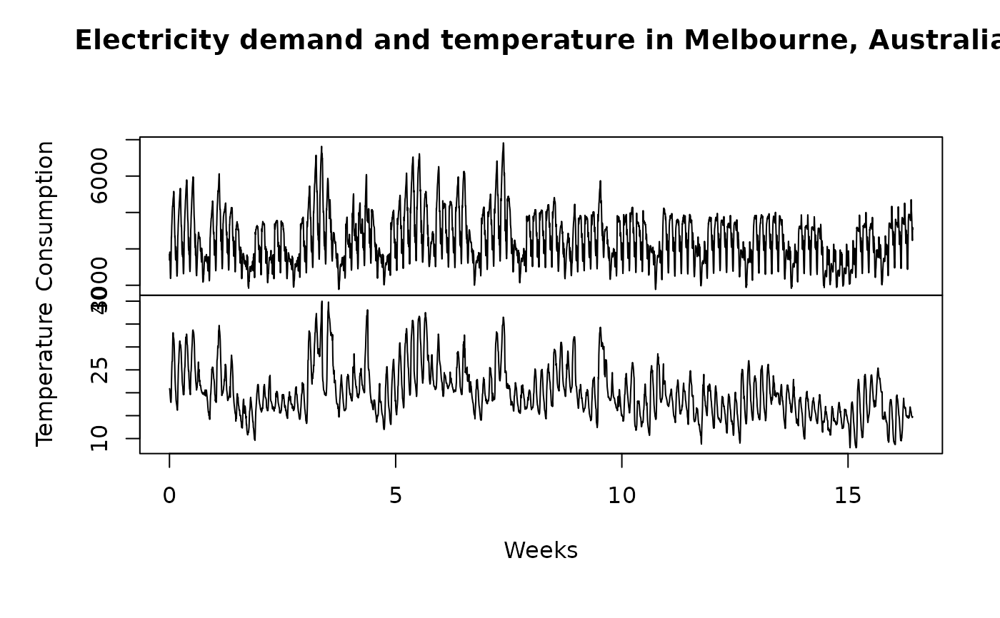

The data set provides information about electricity consumption in Victoria, Australia during the 115 days starting on 10th of January, 2000, and comprises the maximum electricity demand in Victoria during 30-minute periods (48 observations per day). For each 30-minute period, the dataset also provides the air temperature in Melbourne.
Details
Consumptioncolumn contains maximum electricity consumption during 30 minute periodsTemperaturecolumn contains temperature in Melbourne during the corresponding 30 minute intervalTimecolumn contains number of 30 minute interval in the datasetDailySeasonalitycolumn contains positions of 30 minute interval inside daysWeeklySeasonalitycolumn contains positions of 30 minute interval inside weeksWorkingDaySeasonalitycolumn contains positions of 30 minute intervals inside working day/holiday transition diagram
Examples
plot(electricity[, 1:2],
xlab = "Weeks",
main = "Electricity demand and temperature in Melbourne, Australia"
)
